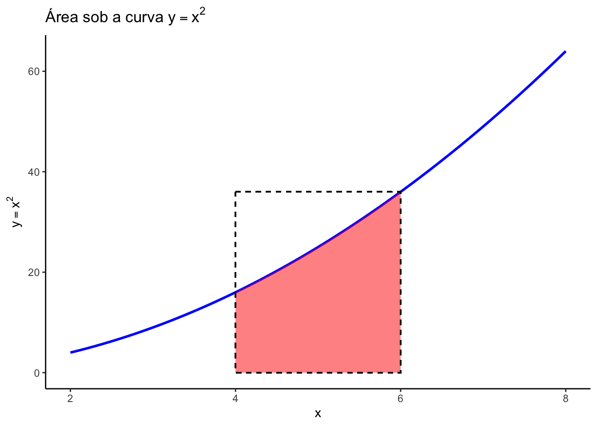
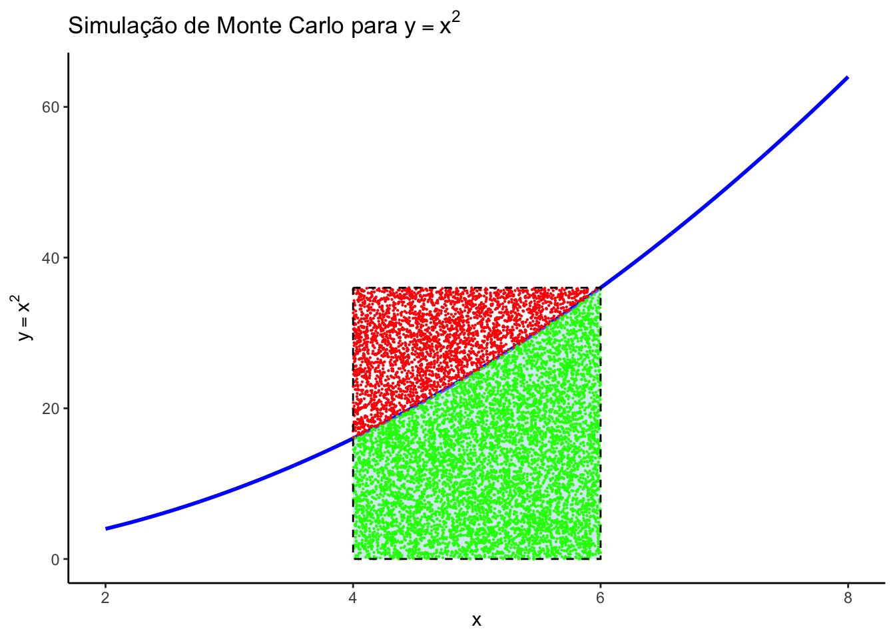
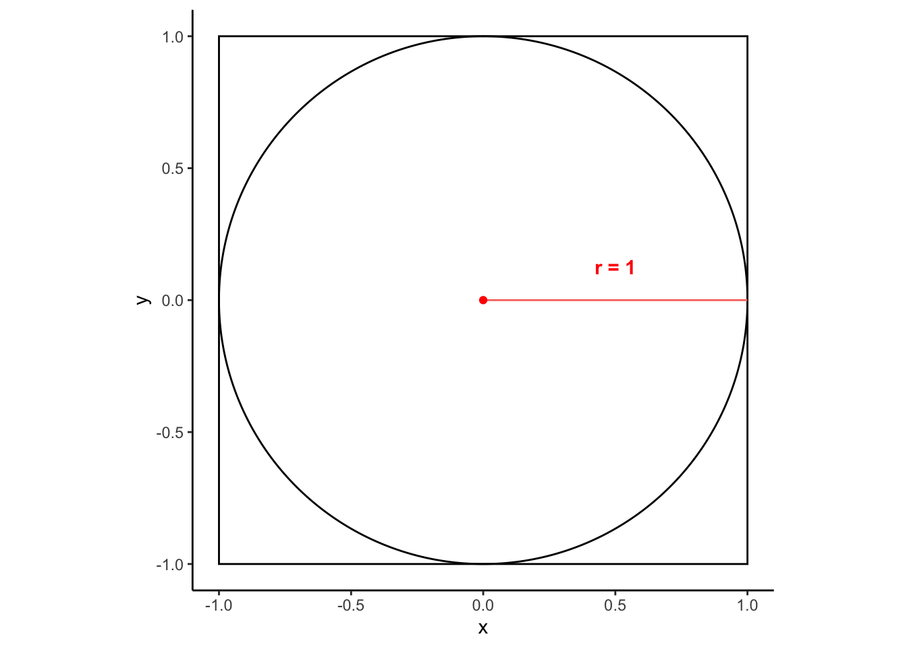
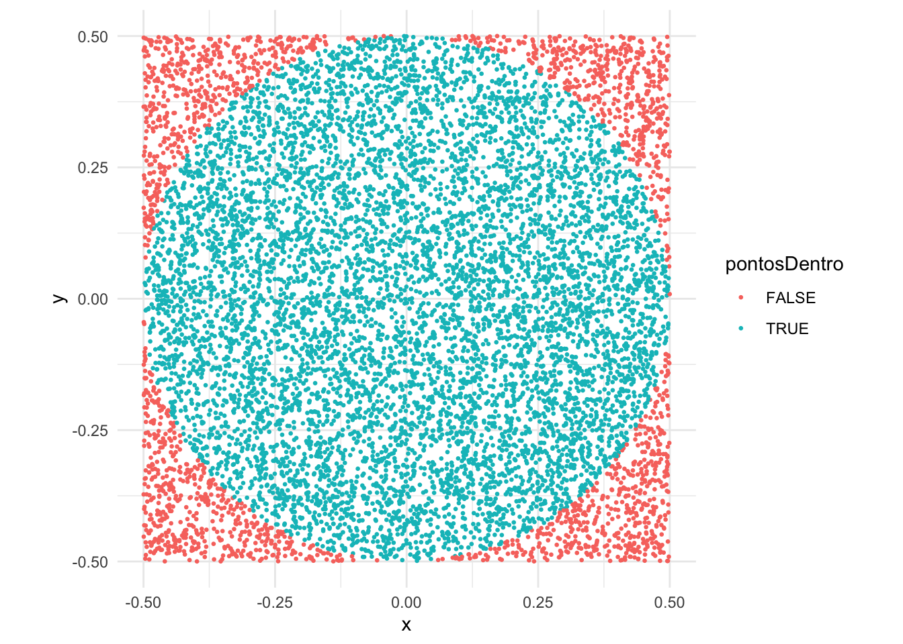
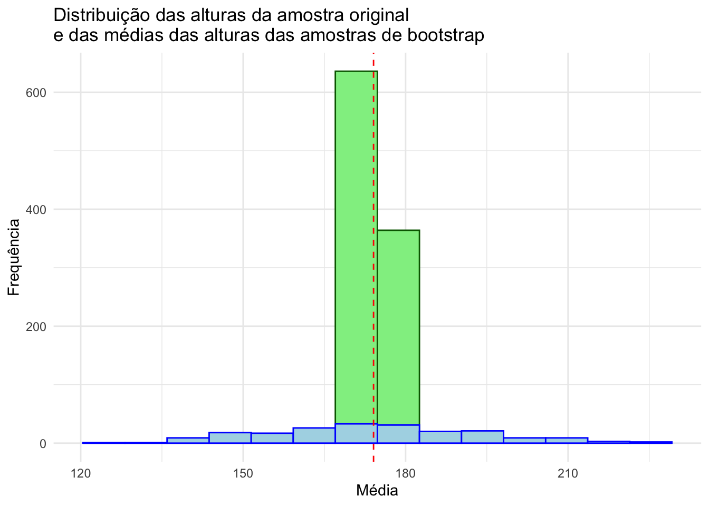
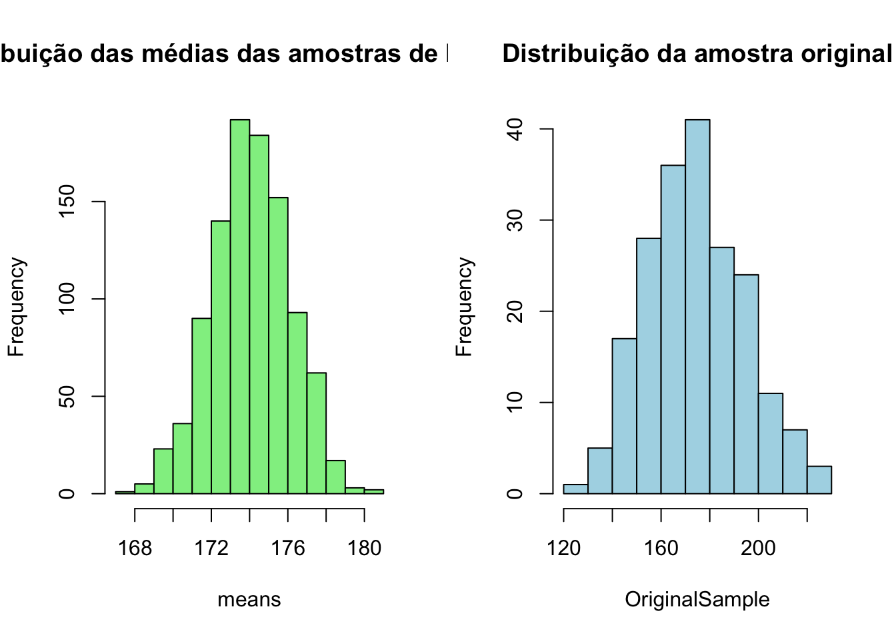

# cria uma sequencia crescente de 1 a 10
x2 <- c(1:10)
x2 [1] 1 2 3 4 5 6 7 8 9 10A simulação é uma ferramenta bastante útil em diversas situações. Pode ser usada em contextos simples, tais como simulações para uso em sala de aula, como também em contextos profissionais permitindo que pesquisadores de diversas áreas possam compreender melhor fenômenos complexos, testar hipóteses e prever resultados em situações onde experimentos reais podem ser inviáveis, caros ou demorados. A linguagem R, com inúmeras funções e pacotes dedicados para a realização de simulações.
Neste capítulo, exploraremos o uso de R para realizar simulações. Dicutiremos inicialmente a geração de sequencias e repetições, a geração de númeroso aleatórios, a importância de garantir a reprodutibilidade em simulações, utilizando a função set.seed, e depois as funções sample e replicate, que nos permitem gerar amostras aleatórias e replicar dados.
Também discutiremos e exploraremos técnicas avançadas como simulações de Monte Carlo, Bootstrapping e Cadeias de Markov Monte Carlo (MCMC).
Às vezes precisamos criar uma sequência, e o modo mais fácil de criar uma sequencia numérica é usar a função c() juntamente com o operador :.
Iremos criar diversas sequências a armazenar o resultado em variáveis. Lembre-se que para mostrar o conteúdo das variável, basta digitar o nome da variável. Nas linhas de código a seguir faremos desse modo.
Criando uma sequencia crescente de 1 em 1
# cria uma sequencia crescente de 1 a 10
x2 <- c(1:10)
x2 [1] 1 2 3 4 5 6 7 8 9 10Criando uma sequencia decrescente de 1 em 1
# cria uma sequencia decrescente de 20 a 10
x3 <- c(20:10)
x3 [1] 20 19 18 17 16 15 14 13 12 11 10Criando sequencia variadas
# cria uma sequencia de 1 a 10
# depois insere o número 20,
# e depois cria uma nova sequencia de 30 a 40
x4 <- c(1:10, 20, 30:40)
x4 [1] 1 2 3 4 5 6 7 8 9 10 20 30 31 32 33 34 35 36 37 38 39 40Quando precisamos de sequencia numérica com intervalos diferentes de 1, é preciso usar a função seq(), na qual podemos especificar o tamanho da diferença entre os números.
seq()Usando seq() com argumentos explícitos
A função seq() tem como argumentos o valor inicial da sequencia (from) , o valor final (to) e o tamanho do salto entre cada elemento da sequencia (by) .
#cria uma sequencia de 1 a 10, aumentando 1 de cada vez, explicitando os argumentos
seq(from = 1, to = 10, by = 1) [1] 1 2 3 4 5 6 7 8 9 10Usando seq() com argumentos na ordem
Argumentos podem ser também passados para a função apenas colocando-os na ordem correta. Toda função tem uma ordem de apresentação dos argumentos. Podemos explicitar isso como fizemos antes, ou apenas inserir na ordem correta como abaixo.
#cria uma sequencia de 1 a 10, aumentando 1 de cada vez
seq(1, 10, 1) [1] 1 2 3 4 5 6 7 8 9 10Usando a função seq() estipulando um intervalo de 0.5
# cria uma sequencia de 1 a 10 aumentando 0.5 de cada vez
seq(1, 10, 0.5) [1] 1.0 1.5 2.0 2.5 3.0 3.5 4.0 4.5 5.0 5.5 6.0 6.5 7.0 7.5 8.0
[16] 8.5 9.0 9.5 10.0Usando a função seq() com intervalo negativo
# cria uma sequencia de 5 até 1, diminuindo 0.2 a cada vez
seq(5, 1, -0.2) [1] 5.0 4.8 4.6 4.4 4.2 4.0 3.8 3.6 3.4 3.2 3.0 2.8 2.6 2.4 2.2 2.0 1.8 1.6 1.4
[20] 1.2 1.0No R, a replicação é uma operação comum que envolve a criação de múltiplas cópias de elementos ou a execução de uma operação várias vezes. As funções rep() e replicate() são essenciais para essas tarefas, embora sirvam a propósitos diferentes.
rep() e replicate()Objetivo: rep() é usado para replicar elementos de um vetor, enquanto replicate() é usado para executar uma expressão ou função várias vezes e coletar os resultados.
Tipo de Retorno: rep() retorna um vetor com elementos repetidos. replicate() retorna uma matriz ou lista com os resultados de cada execução.
Flexibilidade: rep() é útil para a criação de vetores repetitivos. replicate() é mais adequado para simulações e execuções repetidas de código que geram resultados variáveis.
rep()A função rep() é usada para replicar elementos de vetores. Ela pode ser útil quando você precisa criar um vetor com elementos repetidos. Vamos ver alguns exemplos para entender melhor seu uso.
Exemplo 1: Replicando um Valor
# Replicar o número 5, três vezes
rep(5, times = 3)[1] 5 5 5Exemplo 2: Replicando um Vetor de Valores
# Replicar cada elemento do vetor c(1, 2, 3) duas vezes
rep(c(1, 2, 3), each = 2)[1] 1 1 2 2 3 3Exemplo 3: Replicando com Variação na Quantidade de Repetições
# Replicar 1 duas vezes, 2 três vezes e 3 quatro vezes
rep(c(1, 2, 3), times = c(2, 3, 4))[1] 1 1 2 2 2 3 3 3 3Como podemos ver, função rep() é bastante flexível, permitindo especificar quantas vezes cada elemento deve ser repetido (times) ou quantas vezes cada elemento do vetor deve ser repetido (each).
replicate()A função replicate() é usada para executar uma expressão ou função várias vezes e coletar os resultados. Isso é particularmente útil em simulações ou ao executar experimentos repetitivos.
Exemplo 1: Gerando Números Aleatórios
O R tem diversas funções para gerar números aleatórios, como veremos logo adiante. Podemos usar replicate para criar diversos conjuntos diferentes de números aleatórios. Observe que a função replicate() retorna uma matriz, onde as colunas representam cada uma das repetições e as linhas representam os números sorteados em cada repetição.
# Gerar 10 números aleatórios uniformemente distribuídos
# Repetir esse processo 5 vezes com replicate
replicate(5, runif(10)) [,1] [,2] [,3] [,4] [,5]
[1,] 0.21228265 0.3898527 0.47250740 0.66893374 0.11679406
[2,] 0.81791667 0.2932496 0.81111416 0.55426047 0.91309153
[3,] 0.60420456 0.1436612 0.71070608 0.73446399 0.69216421
[4,] 0.53139076 0.9492934 0.02820865 0.45827503 0.08667835
[5,] 0.37209148 0.8001112 0.39547869 0.82761985 0.07331102
[6,] 0.90078042 0.9072131 0.67765159 0.79189772 0.69531865
[7,] 0.11155626 0.4810397 0.83073469 0.08170767 0.43677271
[8,] 0.52782209 0.1058414 0.40308648 0.76341006 0.64732959
[9,] 0.07135281 0.4281111 0.35877118 0.26363395 0.71742911
[10,] 0.82673397 0.9499041 0.28812038 0.34217073 0.34609796# replicando usando o pipe
runif(10) |>
replicate(n=5) [,1] [,2] [,3] [,4] [,5]
[1,] 0.4276656 0.05239424 0.26473307 0.8189127853 0.1175897
[2,] 0.4514042 0.70997147 0.33645159 0.4295855190 0.8324378
[3,] 0.7002073 0.56553790 0.86474613 0.4206835285 0.9065337
[4,] 0.4801440 0.53026183 0.99346041 0.4181123921 0.9237536
[5,] 0.6520919 0.76549550 0.46048373 0.8960186415 0.8406329
[6,] 0.3284826 0.76361023 0.68066410 0.4568664816 0.7878139
[7,] 0.2904079 0.88558643 0.29670625 0.7031281483 0.6662839
[8,] 0.7572216 0.13903266 0.08955807 0.0003899853 0.9099544
[9,] 0.8782428 0.76157075 0.41829749 0.3345950115 0.1778778
[10,] 0.1630282 0.68533733 0.67547044 0.5825106851 0.4430018Exemplo 2: Simulação de Lançamento moeda
Como veremos no capítulo sobre simulação, a função sample() server para realizarmos amostragens. Podemos usar a função replicate() para simular várias repetições de amostragens.
Vamos criar um objeto simulando uma moeda e usar a função sample() para sortear um dos valores desse objeto (cara ou coroa). O argumento replace = TRUE é necessário, pois os valores possíveis podem ser repetido em cada sorteio.
# cria o objeto moeda
moeda <- c("cara","coroa")
# Simular o lançamento de uma moeda 3 vezes
sample(moeda,2, replace = TRUE)[1] "coroa" "coroa"Agora que entendemos o funcionamento de sample(), podemos replicar esses dois lançamentos várias vezes com a função replicate().
# replicando 5 vezes os dois lançamentos
replicate(n=5, sample(moeda, 2)) [,1] [,2] [,3] [,4] [,5]
[1,] "cara" "coroa" "cara" "cara" "coroa"
[2,] "coroa" "cara" "coroa" "coroa" "cara" Números aleatórios são valores gerados de tal forma que cada número tem a mesma probabilidade de ser escolhido. Eles desempenham um papel essencial em diversas áreas da ciência e tecnologia, permitindo a criação de simulações, modelagens estatísticas e testes que replicam a aleatoriedade do mundo real.
Na ciência, a geração de números aleatórios é fundamental por várias razões. As simulações, por exemplo, permitem replicar fenômenos naturais ou processos clínicos, como a progressão de doenças ou a resposta a tratamentos, de maneira controlada. Na amostragem, a seleção aleatória de amostras de uma população garante que cada membro tenha a mesma chance de ser incluído, o que é crucial para a validade estatística dos estudos. Em ensaios clínicos, a randomização dos pacientes para diferentes grupos de tratamento minimiza o viés e assegura que os grupos sejam comparáveis, promovendo resultados mais confiáveis.
A geração de números aleatórios também permite criar conjuntos numéricos que seguem diferentes distribuições estatísticas, como a distribuição uniforme, onde todos os valores dentro de um intervalo têm a mesma probabilidade de ocorrer; a distribuição normal, onde a maioria dos valores se concentra em torno da média, formando a conhecida curva em forma de sino; e a distribuição exponencial, usada para modelar o tempo entre eventos independentes que ocorrem a uma taxa constante.
A história da geração de números aleatórios na computação é bastante interessante. No início, métodos mecânicos, como roletas e sorteios com cartas, eram usados para gerar números aleatórios. Com o advento dos computadores, a necessidade de métodos mais rápidos e eficientes levou ao desenvolvimento de algoritmos que usam uma fórmulas matemática para produzir uma sequência de números pseudoaleatórios. Embora esses números não sejam verdadeiramente aleatórios, eles são suficientemente aleatórios para a maioria das aplicações práticas.
Os números pseudoaleatórios gerados por algoritmos, produzem sequências de números que parecem aleatórios, mas que na verdade seguem uma lógica predefinida. Esses algoritmos começam com um valor inicial chamado de “semente” (ou “seed” em inglês). Se a mesma semente for usada, a sequência de números gerada será sempre a mesma. Em inúmeras situações é importante definir o valor inicial do gerador de números pseudoaleatórios. Ao fixar essa semente, você garante que os resultados da geração de números aleatórios possam ser reproduzidos. Isso significa que, se você e outra pessoa executarem o mesmo código com a mesma semente, ambos obterão exatamente os mesmos números aleatórios.
Na linguagem R a função set.seed() define o valor inicial do gerador de números pseudoaleatórios. Ao fixar essa semente, você garante que os resultados da geração de números aleatórios possam ser reproduzidos. Isso significa que, se você e outra pessoa executarem o mesmo código com a mesma semente, ambos obterão exatamente os mesmos números aleatórios.
No capítulo de Simulações mostramos que podemos cirar conjuntos de números aleatórios com diferentes distribuições, usando as funções runif() (distribuição uniforme), rnorm() (distribuição normal), rt() (distribuição t), rchisq() (distribuição Chi-quadrado) etc.
Veremos a seguir como usar o R para realizar amostragens e como associar as funções de randomização com as funções de amostragem.
O R possui uma função para simular amostras randomizadas: a função sample(). O primeiro argumento dessa função é a população (objeto que contenha os valores da população). O segundo argumento é o tamanho a amostra a ser retirada.
# Selecionando, de forma aleatória, 5 números entre 1 e 10
x <- 1:10
sample(x, 5)[1] 6 9 10 2 8Para obtermos sempre os mesmos resultados precisamos definir a semente com set.seed().
set.seed(5)
x <- 1:10
sample(x, 5)[1] 2 9 7 3 1Por padrão essa função realiza uma amostragem sem reposição, ou seja, uma vez retirada o elemento, esse mesmo elemento não pode ser retirado novamente. Por exemplo, se desejo simular um jogo de bingo, no qual há 100 bolinhas, não podemos retirar a mesma bolinha mais de uma vez. Esse é um exemplo de retirada sem reposição. O código abaixo simularmo uma sequencia aletória de retirada de 5 bolinhas de bingo num total de 100:
x <- 1:100
sample(x, 5)[1] 41 85 94 71 19Para simularmos situações nas quais é possível a repetição de um determinado elemento, precisamos alterar o parametro replace para replace=TRUE.
Por exemplo, imagine que queremos simular a jogada de dois dados. Cada dado pode resultar em um valor de 1 a 6. Nesse caso, queremos sortear dois números de 1 a 6, mas é possível repetir o valor, pois os dados podem mostrar o mesmo valor.
sample(1:6, 2, replace = TRUE)[1] 3 6A função replicate() nos permite repetir uma expressão várias vezes. Isso é útil para simular experimentos repetidamente. O resultado do código abaixo é uma matriz, onde as colunas representam cada uma das 10 repetições e as linhas representam os números sorteados em cada repetição.
# Replicando 10 vezes a amostragem de 2 números entre 1 e 6
x <- 1:6
replicate(n=10, sample(x, 2)) [,1] [,2] [,3] [,4] [,5] [,6] [,7] [,8] [,9] [,10]
[1,] 2 4 5 1 3 5 2 1 6 5
[2,] 5 2 3 4 2 2 3 2 4 3O código acima pode ser escrito de forma mais suscinta como abaixo, sem a criação de uma variável intermediária.
replicate(10, sample(1:6, 2)) [,1] [,2] [,3] [,4] [,5] [,6] [,7] [,8] [,9] [,10]
[1,] 6 1 2 4 4 3 5 6 3 3
[2,] 2 2 4 6 5 4 3 5 6 2O código acima pode ser escrito de forma mais elegante com o uso do operador pipe:
sample(1:6, 2) |>
replicate(n=10) [,1] [,2] [,3] [,4] [,5] [,6] [,7] [,8] [,9] [,10]
[1,] 4 2 6 5 1 1 5 3 4 4
[2,] 1 4 4 2 4 4 2 1 3 3Podemos associar as funções de geração de números aleatórios para criar o conjunto de dados a ser usado na função sample() como a seguir:
# cria um conjunto de números distribuidos de forma normal com média = 0 e desvio padrão = 1
x <- rnorm(100)
# Sorteia 5 desses números
sample(x, 5)[1] 0.9000620 1.2780023 0.8389508 -1.7256622 -1.3614312Ou usando o pipe:
rnorm(100) |> sample(5)[1] -0.04019016 0.72640902 1.89762159 0.66753870 0.30438718Finalmente, a função sample não se limita a números. Podemos criar conjuntos de texto para serem sorteados. Por exemplos, nomes de pessoas ou cores. Podemos simular a jogada de uma moeda, com valores sendo nesse caso cara ou coroa.
moeda <- c("cara", "coroa")
sample(moeda, 1)[1] "coroa"A Simulação de Monte Carlo é uma técnica matemática e estatística que utiliza a geração de números aleatórios para realizar inúmeros experimentos virtuais no computador, explorando todas as formas possíveis que uma situação pode ocorrer. Isso ajuda a entender melhor as probabilidades de diferentes resultados.
O procedimento dessa simulação geralmente envolve algumas etapas:
Por exemplo, Imagine que você está jogando roleta em um cassino e quer calcular a probabilidade de ganhar ao apostar no número 7. Em uma roleta europeia, há 37 casas numeradas de 0 a 36.
Passos da Simulação de Monte Carlo:
# Definindo parâmetros do modelo
numero_de_rodadas <- 10000
numero_vencedor <- 7
# Simulando a roleta
set.seed(123) # Para reprodutibilidade
resultados <- sample(0:36, numero_de_rodadas, replace = TRUE)
# Contando quantas vezes saiu o número vencedor
vitorias <- sum(resultados == numero_vencedor)
# Calculando a proporção de vitórias
proporcao_vitorias <- vitorias / numero_de_rodadas
# Exibindo resultados
cat("Proporção de vitórias ao apostar no número 7:", proporcao_vitorias, "\n")Proporção de vitórias ao apostar no número 7: 0.0265 A simulação de Monte Carlo não é apenas útil para calcular probabilidades em jogos de azar, mas também é amplamente utilizada em matemática e ciência para estimar diversas outras condições. Uma aplicação comum é a estimativa da área abaixo de uma curva.
Vamos demonstrar como a Simulação de Monte Carlo pode ser usada para calcular a área abaixo da curva da função \(y = x^2\) entre os valores 4 e 6. A área abaixo da curva pode ser estimada como sendo a área do retangulo entre os pontos 4 e 6 multiplicada pela razão entre da área abaixo da curva a a área do quadrado. Entretanto, a área abaixo da curva é justamente o que queremos saber.
A Simulação de Monte Carlo pode nos ajudar nesse problema, pois podemos fazer uma analogia da área numa região com a quantidade de pontos aleatórios que cabem nessa região. Assim, podemos estimar essa proporção entra as áreas através da razão entre a quantidade de pontos aleatórios que caem abaixo da curva pelo total de pontos dentro do retângulo.
\[ \frac{\text{Área abaixo da curva}}{\text{Área do retângulo}} = \frac{\text{pontos abaixo da curva}}{\text{pontos totais no retangulo}} \]
ou seja,
\[ {\text{Área abaixo da curva}} = {\text{Área do retângulo}} * {\frac{\text{pontos abaixo da curva}}{\text{pontos totais}}} \]


Para estimar a área sob a curva usando a simulação de Monte Carlo, seguimos os seguintes passos:
x = 4 e x = 6.Vamos implementar isso no R.
# Definindo o modelo e os limites
f <- function(x) x^2
x_min <- 4
x_max <- 6
y_min <- 0
y_max <- f(x_max)
# Definindo o número de pontos aleatórios a serem gerados
n_pontos <- 10000
# Gerando pontos aleatórios
set.seed(123) # Para reprodutibilidade
x <- runif(n_pontos, min = x_min, max = x_max)
y <- runif(n_pontos, min = y_min, max = y_max)
# Verificando quantos pontos estão abaixo da curva
# variável lógica que será verdadeira se y for menor que x^2
abaixo_da_curva <- y <= f(x)
# podemos somar os valores verdadeiros, pois no R TRUE tem o valor = 1
pt_abaixo_da_curva <- sum(abaixo_da_curva)
# Calculando a área
area_retangulo <- (x_max - x_min) * (y_max - y_min)
area_estimada <- area_retangulo * (pt_abaixo_da_curva / n_pontos)
# Exibindo o resultado
cat("A área estimada abaixo da curva y = x^2 entre x = 4 e x = 6 é aproximadamente:", area_estimada, "\n")A área estimada abaixo da curva y = x^2 entre x = 4 e x = 6 é aproximadamente: 50.5368 x_min e x_max são os limites inferiores e superiores do intervalo de integração (4 e 6, respectivamente).y_min é 0 e y_max é \(f(xmax)=36\).n_pontos é definido como 10.000.runif para gerar pontos aleatórios distribuídos uniformemente no intervalo x entre \([4, 6]\) e de y no intervalo \([0, 36]\).y <= f(x) para verificar quantos pontos estão abaixo da curva \(y=x^2\).Vamos exemplificar também o uso da Simulação de Monte Carlo para calcular o valor de \(\pi\), seguindo o exemplo do livro Programming for Analytics in R de John Paul Helveston https://p4a.jhelvy.com/monte-carlo-methods.

Sabemos que a área do círculo é calculada com \(A=\pi*r^2\). Se desenharmos um quadrado contendo o círculo, a área desse quadrado será \(A=(2r)^2\) ou \(A=4r^2\).
Se fizermos a razão da área do círculo pela área do quadrado obteremos:
\(R=\frac{\pi r^2}{4r^2}\) que pode ser simplificada para \(R=\frac{\pi}{4}\).
Ou seja \(\pi=4R\)
Então, para calcular \(\pi\), basta multiplicar por 4 a razão entre a área do círculo e a do quadrado.
A Simulação de Monte Carlo nos permite fazer um aproximação dessa razão. Podemos criar muitos pontos aleatórios no quadrado e depois simplesmente contar o número que estão dentro do círculo. A proporção desses pontos dentro com o total será a aproximação da razão da áreas.
Primeiro, vamos gerar um conjunto aleatório de pontos em um quadrado e depois determinar quais estão dentro do círculo.
Para criar os pontos, usaremos um quadrado com comprimento lateral de 1 centrado em (x, y) = (0, 0), então nossos pontos precisam estar entre as coordenadas x = (-0,5, 0,5) e y = (- 0,5, 0,5):
trials <- 10000
pontos <- data.frame(x = runif(trials, -0.5, 0.5),
y = runif(trials, -0.5, 0.5))Para determinar quais pontos estão dentro do círculo (que tem um raio de 0,5), basta calcular a distância de cada ponto até o centro, o que nada mais é que a diagonal de um triângulo, que pode ser calculada com o teorema de pitágoras. Se essa diagonal for menor que o raio, então o ponto está dentro do círculo. Para isso iremos criar uma variável lógica chamada pontosDentro, que terá o valor TRUE se o ponto estiver dentro do círculo.
library(dplyr)
pontos <- pontos |>
mutate(raio = sqrt(x^2 + y^2),
pontosDentro = raio <= 0.5)
head(pontos) x y raio pontosDentro
1 0.49112339 -0.41210770 0.6411201 FALSE
2 -0.19776935 0.27961148 0.3424840 TRUE
3 -0.06624099 -0.21883268 0.2286386 TRUE
4 -0.33947909 0.04969904 0.3430977 TRUE
5 0.32302671 -0.30539315 0.4445348 TRUE
6 -0.29190945 -0.16056017 0.3331527 TRUEO desenho abaixo mostra a simulação, colorindo de forma diferentes os pontos dentro e fora do círculo:
library(ggplot2)
ggplot(pontos) +
geom_point(aes(x = x, y = y, color = pontosDentro), size = 0.5) +
coord_fixed( ratio=1) +
theme_minimal()
Agora basta calcular a proporção de pontos dentro do círculo.
dentro <- sum(pontos$pontosDentro)
total <- nrow(pontos)
R <- dentro/total
piApprox <- 4 * R
piApprox[1] 3.1524Se aumentarmos a quantidade de pontos o valor de \(\pi\) fica bem mais próximo do verdadeiro.
trials <- 10000000
pontos <- data.frame(x = runif(trials, -0.5, 0.5),
y = runif(trials, -0.5, 0.5)) |>
mutate(raio = sqrt(x^2 + y^2),
pontosDentro = raio <= 0.5)
R <- sum(pontos$pontosDentro) / nrow(pontos)
piApprox <- 4 * R
piApprox[1] 3.141812O bootstrap é um método computacional para estimar a precisão de medidas estatísticas, baseado na reamostragem com reposição (replacement). Um dos principais uso do Boostrap é para calcular o intervalo de confiança para qualquer tipo de medida estatística (Dogan 2017).
O método de bootstrap simples envolve pegar o conjunto de dados original, usando um computador, fazer uma amostragem com reposição para formar uma nova amostra (chamada de reamostra, amostra de bootstrap ou boostrap sample) que também é de tamanho N. A amostra de bootstrap é retirada de o original usando amostragem com substituição (por exemplo, podemos ‘reamostrar’ 5 vezes de [1,2,3,4,5] e obter [2,5,4,4,1]). Esse processo é repetido milhares de vezes. Em seguida, para cada uma dessas amostras de bootstrap, calculamos a estatística de interesse, chamada de “estimativa de bootstrap e seu intervalo de confiança.
Entretanto, excetuando-se a média, é muito difícil conhecer a precisão de outras estimativas. O algoritmo de boostrap serve justamente para isso, para estimarmos a precisão de medidas estatísticas.
Pra fins de exemplo, vamos comparar o intervalo de confiança de uma média calculado calculado com o método boostrap e calculado com a fórmula tradicional \(\bar{x} \pm 1.96\times \frac{\sigma}{\sqrt{n}}\), onde \(\bar{x}\) é a média, \({\sigma}\) é o desvio padrão e \({n}\) é o tamanho da amostra.
Suponha que estamos interessados na altura média das pessoas de uma cidade. Não podemos medir todas as pessoas da cidade, por isso, em vez disso, amostramos apenas uma pequena parte dela. Suponha que a amostra seja de tamanho N; isto é, medimos as alturas de N indivíduos. Dessa única amostra, apenas uma estimativa da média pode ser obtida. Entretanto, precisamos de alguma noção da variabilidade da média que calculamos. Apesar ser fácil aavaliar o erro padrão da média, esse exemplo serve para entendermos como funciona o boostrap.
Para fins desse exemplo, vamos usar gerar de forma randomizada uma população de 100.000 pessoas, com distribuição normal, com média de altura de 175cm e desvio padrão de 20cm. E vamos retirar desse população uma amostra com 200 pessoas. Em seguida vamos retirar uma amostra dessa população e então calcular o intervalo de confiança da média da população e da amostra.
pop <- rnorm(n = 100000, mean = 175, sd = 20 )
OriginalSample <- sample(pop, 200, replace = FALSE)Um teste t pode nos fornecer o intervalo de confiança da população e de nossa amostra:
t.test(pop)
One Sample t-test
data: pop
t = 2756.7, df = 99999, p-value < 2.2e-16
alternative hypothesis: true mean is not equal to 0
95 percent confidence interval:
174.9009 175.1498
sample estimates:
mean of x
175.0254 t.test(OriginalSample)
One Sample t-test
data: OriginalSample
t = 124.98, df = 199, p-value < 2.2e-16
alternative hypothesis: true mean is not equal to 0
95 percent confidence interval:
171.3353 176.8286
sample estimates:
mean of x
174.082 Agora vamos calcular o intervalo de confiança da média da população e da amostra usando o método de bootstrap. Primeiro vamos criar 1000 amostras de bootstrap.
bootSamples <- replicate(1000, sample(OriginalSample, size = 100, replace = TRUE))Agora vamos calcular a média de cada uma das amostras de bootstrap e então calcular o intervalo de confiança.
# criando uma vetor "means" com as médias de cada uma das amostras do boostrap
means <- apply(bootSamples, 2, mean)library(ggplot2)
ggplot() +
geom_histogram(aes(x = means), bins = 14, fill = "lightgreen", col="darkgreen") +
geom_histogram(aes(x = OriginalSample), bins = 14, fill = "lightblue", col="blue") +
geom_vline(xintercept = mean(OriginalSample), color = "red", linetype = "dashed") +
labs(title = "Distribuição das alturas da amostra original\ne das médias das alturas das amostras de bootstrap",
x = "Média",
y = "Frequência") +
theme_minimal()
par(mfrow = c(1, 2))
hist(means,breaks = 14, main = "Distribuição das médias das amostras de bootstrap", col="lightgreen")
hist(OriginalSample, breaks = 14, main = "Distribuição da amostra original", col="lightblue")